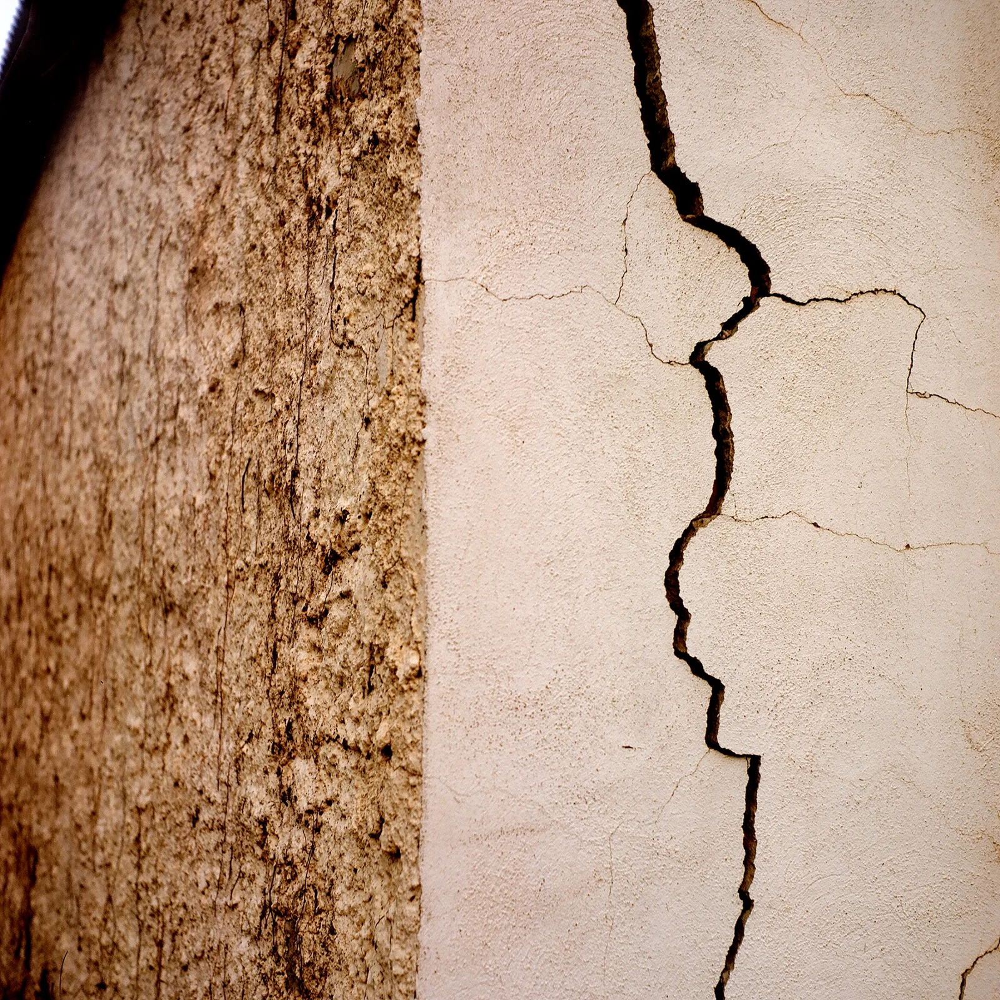
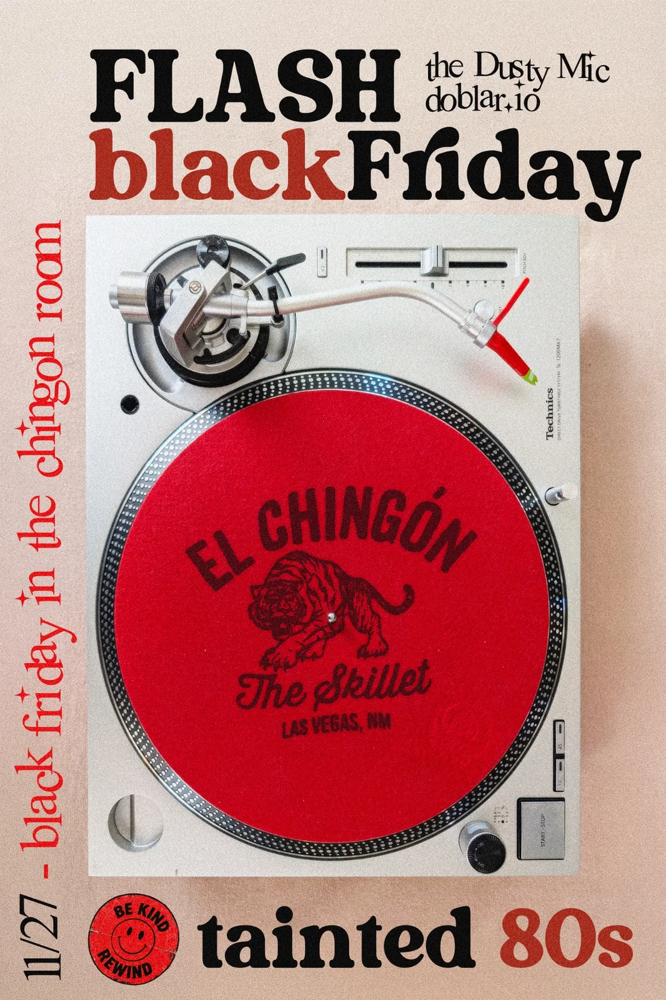
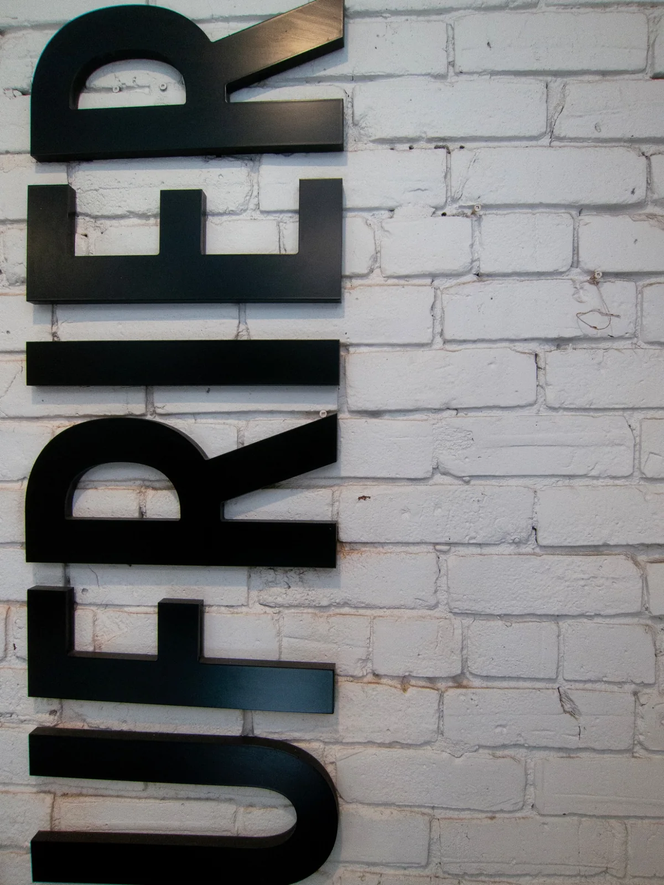
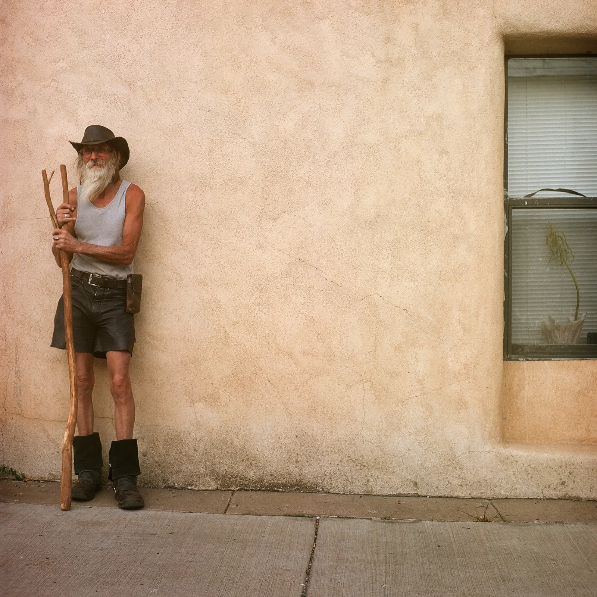
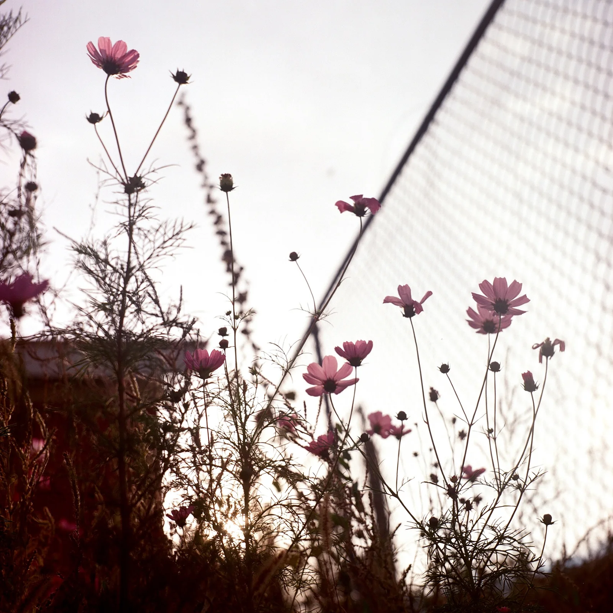
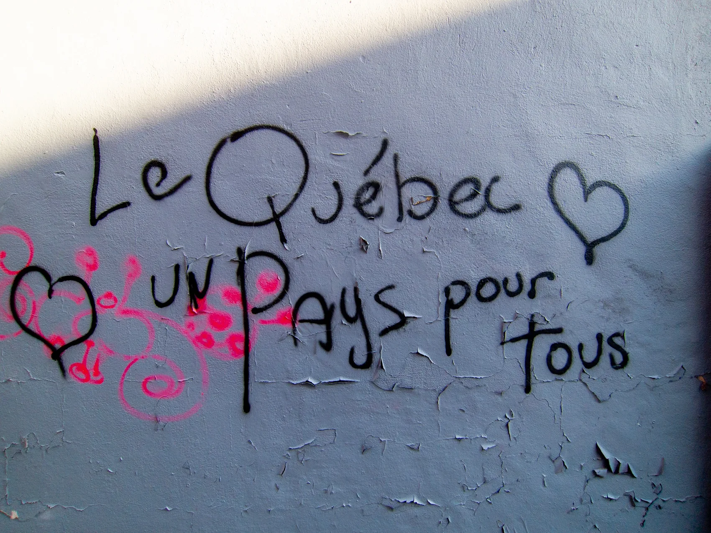
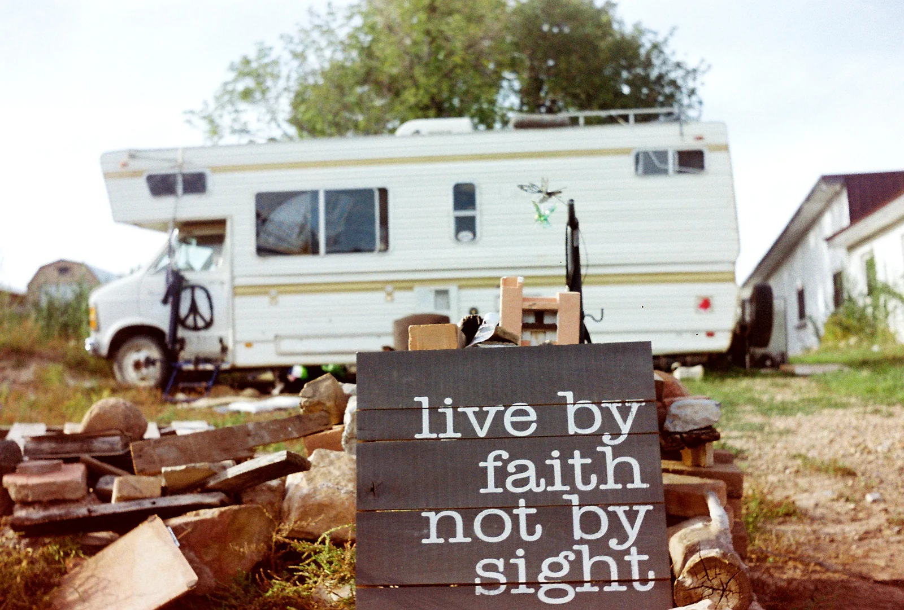
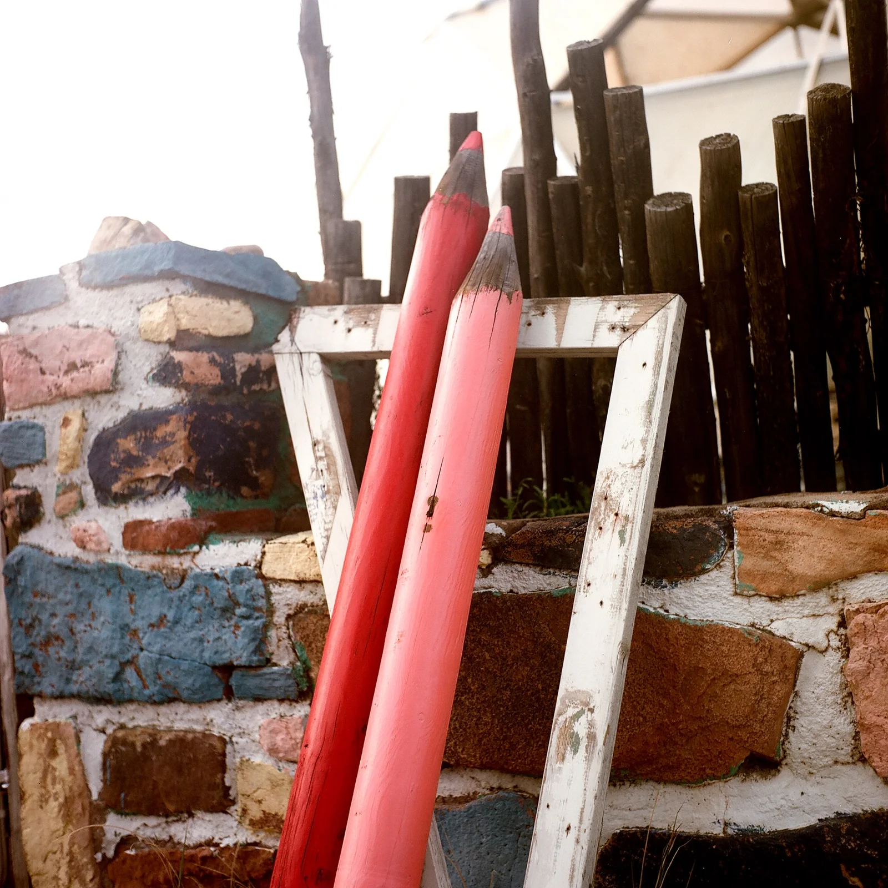
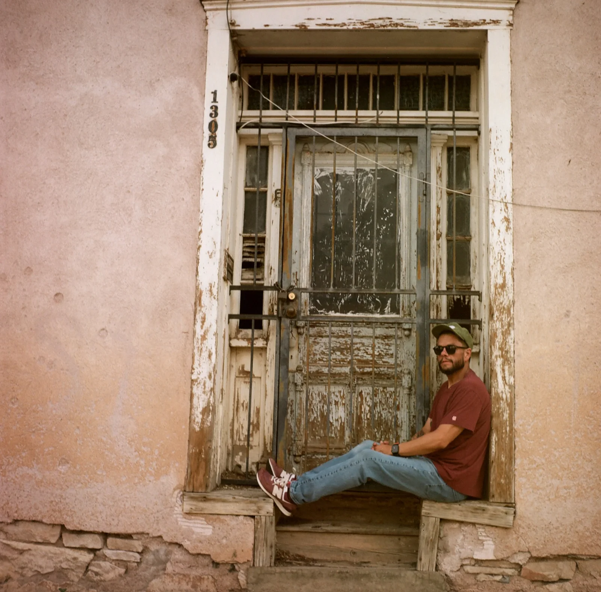
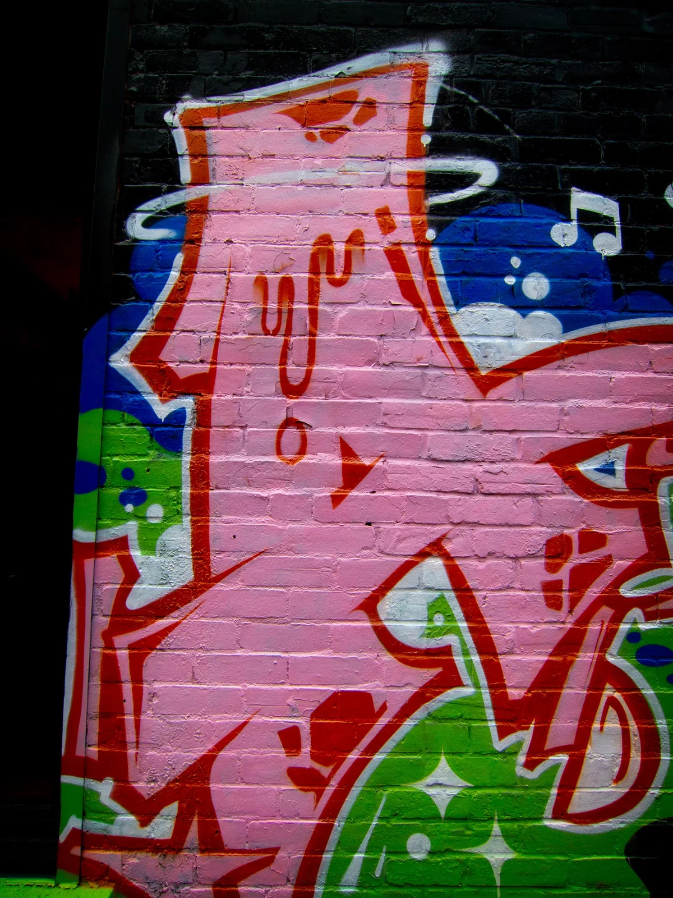

An independent artistic practice / 2026
Stillunfold-ing.
doblar.io is where photographs, dance floors, handmade graphics, and strange experiments end up in the same room.
Look around ↘
doblar.io / image 001A little rough around the edges.A little
of everything.
No tidy categories. Some things are made for the wall. Some for the street. Some for the dance floor.








Selected signal / 001
After dark.
Parties, performances, screenings, and other gatherings. Not every event fits in a neat box.
Friday / Nov 27, 2026 · Las Vegas, NMFlashBlack
FlashBlack
Friday
An 80s night at The Skillet with doblar.io and The Dusty Mic. Big records, darker edges, and a little VHS-era excess.
Four directions / No borders
The practice.
These overlap more often than they don't.
Sound

02 / PhotographyImages.

03 / Design